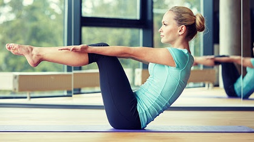

PILATES
Pilates je profinjena forma vežbanja koja istovremeno razvija specifičnu mišićnu snagu kao i fleksibilnost mišića i zglobova, cime se postiže optimalna telesna uravnoteženost. Pilates izdužuje i tonizira telo, utiče na elegantnu posturu, oslobađa stresa, doprinosi boljoj samokontroli i većem samopouzdanju.